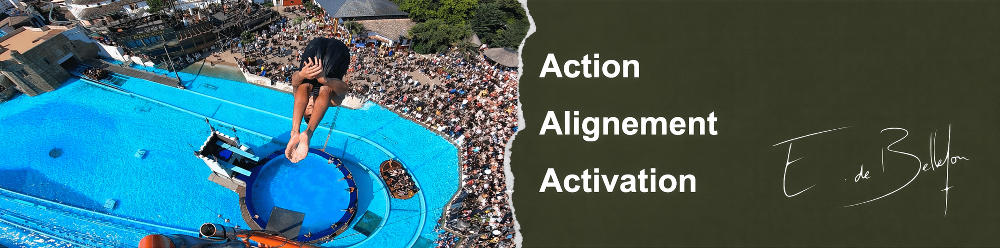

Formations · Santé · Excellence
Un cabinet parisien fondé sur trois convictions : le corps et l'esprit se répondent, le mouvement libère, et chaque patient mérite un soin d'exception.
Le cabinet
L'Académie de Bellefon réunit des ostéopathes, coachs et professionnels issus des institutions les plus prestigieuses. Notre approche intègre rigueur clinique, empathie et précision à des méthodes de coaching éprouvées par les plus hauts niveaux de performance.
Que vous veniez pour une douleur chronique, une préparation sportive, musicale ou un accompagnement de vie, chaque séance est pensée pour révéler votre plein potentiel — physique, mental, et humain.
Nous reçevons sur rendez-vous à Paris, avec une disponibilité étendue pour s'adapter à vos contraintes.
Vos praticiens
Eduqué dans la performance en sport et en musique depuis son plus jeune âge. Après des études à CentraleSupélec et un bref passage en Finance à l'Inspection Générale de la Société Générale, il s'est tourné vers l'Ostéopathie pour comprendre davantage le corps humain et les enjeux psychosomatiques. Emmanuel a exploré les extrêmes de la gestion du stress en étant plongeur de Haut Vol professionnel à côté de son activité d'ostéopathe et de conférencier. Sa conviction : l'alignement Corps-Cœur-Esprit fait des merveilles... Long time !
Prendre RDV sur DoctolibAudrey a grandi au Havre. Elle y a pratiqué le violon et la danse classique au Conservatoire de musique et de danse, se développant également à côté en sport d'équipe via le basket. Quelques années d'études en biologie, une première année de médecine, et cinq années d'études spécialisées en Ostéopathie plus tard, Audrey est à Paris. Formée également en Pilates, Audrey a plusieurs milliers d'heures de coaching au compteur : individuels, bootcamps, coachings en entreprise. Son calme, sa bienveillance et son écoute sont ses piliers pour une empathie exceptionnelle. Sa conviction : la vie c'est le mouvement !
Prendre RDV sur DoctolibVotre première séance
Choisissez votre praticien et réservez directement en ligne, sans attente.